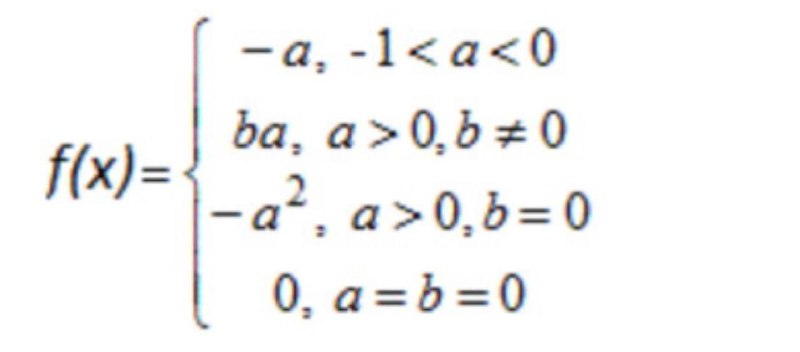

Лаборатна робота № 2
Умова задачі
Завдання 1:Визначити значення функції в залежності від значення її аргументу, яке вводиться з клавіатури. Умови завдання 1 подані в таблиці 2.1 по варіантах.
Обчислити заданий вираз при заданих користувачем значеннях параметрів a, b, y:

Завдання 2: Розв'язати геометричну або логічну задачу. Умови завдання 2 подані в таблиці 2.2 по варіантах.
Точка площини задана декартовими координатами (𝑥, 𝑦). Перевірити, чи належить вона кільцю, з центром у початку координат, внутрішнім радіусом 1 і зовнішнім 2.